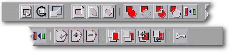
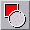
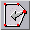
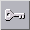

<!-- Documentation Xclamation (c)1994-2000 AXENE contact axene@axene.org>
<html>

<head>
<title>&quot;Frame&quot; Horizontal Toolbar</title>
</head>

<body BGCOLOR="#FFFFFF" BACKGROUND="Images/back.gif" TEXT="#000000">

<p ALIGN="right">  </p>

<p><br>
<br>
The Frame toolbar provides all frame commands, from creation to the changing of frame
shape. A frame is an area delimited by straight lines which displays images, line arts, or
text. The object contained in a frame is only visible inside the frame's outline. <br>
<br>
</p>

<hr>

<p align="center"><br>
 <br>
<small><i>Screen shot: Frame Toolbar </i></small></p>

<p><br>
</p>

<hr>

<p><br>
</p>

<h3>First section of the toolbar:</h3>

<ul>
  <li> <a
    NAME="handle_mode_icon">The first button shifts Xclamation into '</a><a
    HREF="Frame_Selection_Modes.html#handles_mode"><b> handle mode frame selection</b></a>',
    the most used mode and therefore the default. In this mode the user may delete, move,
    copy, modify the features, and change the size of a frame selection.<br>
    When Xclamation is in frame selection peaked mode the user may click on the middle mouse
    button to shift into handle mode and vice versa. <br>
    &nbsp;</li>
  <li> <a NAME="rotation_icon">The
    second button <b>applies a rotation</b> to the selected frames. A mark indicating the
    center of rotation will appear, placed by default at the center of the selection.<p>To <b>move
    the center of rotation</b>: <br>
    &nbsp;<ol>
      <li>Click on the center of rotation to pick it up. <br>
        &nbsp;</li>
      <li>Move the mouse. <br>
        &nbsp;</li>
      <li>Click again to place it at its new spot. <br>
        &nbsp;</li>
    </ol>
    <p>Movement of the center of rotation is affected by magnetism.<br>
    This operation can be canceled during the second step by clicking the right mouse button. </p>
    <p>To <b>perform the rotation</b>: <br>
    &nbsp;<ol>
      <li>Click away from the center of rotation. An axis will appear stretching from the center
        to the position of the mouse. <br>
        &nbsp;</li>
      <li>Move the mouse's cursor. The angle of rotation effected on the selection is equal to the
        angle formed by horizontal axis and the axis extending from the center of rotation to the
        mouse's position. <br>
        &nbsp;</li>
      <li>Click again to affix the frames in the given position. <br>
        &nbsp;</li>
      <li>Repeat steps one through three. To quit rotation mode, click on the icon of your choice
        or click anywhere with the right mouse button to return to the selection mode of the
        preceding frame. <br>
        &nbsp;</li>
    </ol>
    <p>This operation can be canceled during the second step by clicking with the right mouse
    button.<br>
    In order for the angle effected upon the frame selection to be a multiple of 45°, the
    user must hold down the <tt>Shift</tt> key. </a><br>
    &nbsp;</p>
  </li>
  <li> <a NAME="scaling_icon">The
    third button <b>performs a scaled enlargement/reduction</b> upon the selected frames. This
    type of procedure enlarges or reduces a geometric figure without alteration of its shape.
    A mark will appear indicating the center of the scaled enlargement/reduction, which is
    placed by default at the center of the selection. <p>To <b>move the center of the scaled
    enlargement/reduction</b>: <br>
    &nbsp;<ol>
      <li>Click on the center of rotation to pick it up. <br>
        &nbsp;</li>
      <li>Move the mouse. <br>
        &nbsp;</li>
      <li>Click again to move the center to its new place. <br>
        &nbsp;</li>
    </ol>
    <p>Movement of the enlargement/reduction center is affected by magnetism. <br>
    This operation can be canceled during the second step by pressing the right mouse button. </p>
    <p>To <b>carry out a scaled enlargement/reduction</b>:<br>
    &nbsp;<ol>
      <li>Click away from the center of the enlargement/reduction. An axis extending from the
        center to the position of the mouse's cursor will appear. <br>
        &nbsp;</li>
      <li>Move the mouse's cursor. The scaled enlargement or reduction factor depends solely upon
        the distance separating the center and the mouse cursor. The larger the distance, the
        larger the scale for the enlargement. <br>
        &nbsp;</li>
      <li>Click again to affix the frames in the given position. <br>
        &nbsp;</li>
      <li>Repeat steps one through three. To quit enlargement/reduction mode click on the icon of
        your choice, or click anywhere with the right mouse button to return to the selection mode
        of the preceding frame. <br>
        &nbsp;</li>
    </ol>
    <p>This operation may be canceled during the second step by clicking with the right mouse
    button. </a><br>
    &nbsp;</p>
  </li>
</ul>

<p><br>
</p>

<h3>Second Section of the Toolbar:</h3>

<ul>
  <li> <a NAME="rectangle_icon">The
    first button <b>creates a rectangular frame</b>. <br>
    &nbsp;<ol>
      <li>Click on the display screen to place a point of the rectangle. <br>
        &nbsp;</li>
      <li>Move the mouse to stretch the shape of the rectangle. <br>
        &nbsp;</li>
      <li>Click again to place the diagonally opposing point of the rectangle thus creating the
        frame. <br>
        &nbsp;</li>
      <li>Repeat steps one through three. To quit creation mode click on the icon of your choice,
        or click anywhere with the right mouse button to return to the selection mode of the
        preceding frame. <br>
        &nbsp;</li>
    </ol>
    <p>This operation is affected by magnetism. It can be canceled during the second step by
    clicking with the right mouse button. To <b>create a square</b>, press the <tt>shift</tt>
    key during command execution. </a><br>
    &nbsp;</p>
  </li>
  <li> <a NAME="polygon_icon">The
    second button <b>creates a polygonal frame</b>. <br>
    &nbsp;<ol>
      <li>Click on the display screen to place the first point of the polygon. <br>
        &nbsp;</li>
      <li>Move the mouse to stretch one side. <br>
        &nbsp;</li>
      <li>Click again to place the following point. Repeat steps two and three as many times as
        necessary. <br>
        &nbsp;</li>
      <li>Click on the first point of the polygon to close the surface. To confirm the polygon,
        click again on the first point; otherwise, begin again at the first step to add another
        piece or to extend the polygon. <br>
        &nbsp;</li>
      <li>Repeat steps one through four to create a new polygon. To quit frame creation mode click
        on the icon of your choice or click anywhere with the right mouse button to return to the
        preceding frame selection mode. <br>
        &nbsp;</li>
    </ol>
    <p>Clicking with the middle mouse button while creating a frame is equivalent to clicking
    two times on the first point of the polygon (closing and confirming the polygon).<br>
    This operation is affected by magnetism. It can be canceled by clicking with the right
    mouse button before confirming the polygon. </a></p>
    <p><br>
    &nbsp;</p>
  </li>
  <li> <a NAME="ellipse_icon">The
    third button <b>creates an elliptical frame</b>. <ol>
      <li>Click on the display screen to place a point of the virtual rectangle circumscribing the
        ellipse. <br>
        &nbsp;</li>
      <li>Move the mouse to stretch the shape of the ellipse. <br>
        &nbsp;</li>
      <li>Click again to place the diagonally opposite point of the rectangle circumscribing the
        ellipse in order to create the frame. <br>
        &nbsp;</li>
      <li>Repeat steps one through three. To quit frame creation mode click on the icon of your
        choice or click anywhere with the right mouse button to return to the preceding frame
        selection mode. <br>
        &nbsp;</li>
    </ol>
    <p>This operation is affected by magnetism. It can be canceled during step two by clicking
    with the right mouse button.<br>
    To <b>create a circle</b>, hold down the <tt>Shift</tt> key during the operation. </a><br>
    &nbsp;</p>
  </li>
</ul>

<p><br>
</p>

<h3>Third Section of the Toolbar:</h3>

<p>In order to access the tools listed here there must be <i>at least two frames selected</i>.

<ul>
  <li> <a NAME="add_icon">The first
    button <b>joins together the surface areas</b> of selected frames to form a single new
    frame.<br>
    The angle of the final frame will be equal to the angle of the bottom-most frame in the
    selection.<br>
    If a frame contains a line art, text, or images (in this order of priority) the object
    will be preserved in the final frame. If several of the selected frames contain items,
    only the object of highest priority will be preserved; others will be deleted.<br>
    <i>For accurate calculations, avoid joining frames with shared sides.</i> </a><br>
    &nbsp;</li>
  <li> <a NAME="substract_icon">The
    second button <b>subtracts surface area</b> from the selected frames to form a single new
    frame. The final frame will be the bottom-most frame minus the intersection with other
    selected frames.<br>
    The angle of the final frame will be equal to that of the bottom-most frame in the
    selection.<br>
    If a frame contains a line art, text, or images, (in this order of priority) the object
    will be preserved to fill the final frame. If several selected frames contain objects only
    the object of highest priority will be conserved; others will be deleted.<br>
    <i>Warning! If the bottom-most frame of the selection is entirely covered by other frames
    of the selection, using this button will delete all the frames of the selection.<br>
    For accurate calculations, avoid subtracting frames with shared sides.</i> </a><br>
    &nbsp;</li>
  <li> <a NAME="fusion_icon">The
    third button <b>joins together surface areas of selected frames while deleting the
    intersecting areas</b> to form a single new frame.<br>
    The angle of the resulting frame will be equal to that of the bottom-most frame of the
    selection.<br>
    If a frame contains a line art, text, or an image (in this order of priority) this object
    will be preserved in the final frame. If several frames of the selection are filled, only
    the object with highest priority will be preserved; the others will be deleted. </a><br>
    &nbsp;</li>
  <li> <a NAME="outline_icon">The
    fourth button subtracts the intersecting surface areas of other selected frames from the
    bottom-most frame in the selection. In other words, all of the selected frames above will <b>leave
    their mark</b> on the bottom-most selected frame. This button works like the second button
    of this section, except that the frames are not joined together as one. This tool is
    particularly useful to &quot;runaround&quot; other frames. </a><br>
    &nbsp;</li>
  <li> <a NAME="align_icon">The fifth
    button <b>aligns the frames</b> of a selection. This button calls up the '</a><a
    HREF="Box_Align.html">frame alignment</a>' dialog box. <br>
    &nbsp;</li>
</ul>

<p><br>
</p>

<h3>Fourth Section of the Toolbar:</h3>

<ul>
  <li> <a NAME="vertex_mode_icon">The
    first button shifts Xclamation into '</a><a
    HREF="Frame_Selection_Modes.html#vertices_mode"><b>Frame selection in peaked mode</b></a>'.
    In this mode the user may delete, move, copy, modify the features, and move a point or a
    side of a frame selection.<br>
    When Xclamation is in 'Frame selection in handle mode' the user may click on the middle
    button of the mouse to shift into peaked mode and vice versa. <br>
    &nbsp;</li>
  <li> <a NAME="add_vertex_icon">The
    second button <b>inserts points</b> to the selected frames.<br>
    One of three cases might present itself: <br>
    &nbsp;<ul>
      <li>Inserting a point on a side line of a frame. To do this click on the side; when the
        cursor is directly over a side it takes the shape of a circle. <br>
        &nbsp;</li>
      <li>Add an outside addition or extend a frame. <br>
        &nbsp;<ol>
          <li>Click on the spot to insert the addition. <br>
            &nbsp;</li>
          <li>Move the mouse to stretch the side. <br>
            &nbsp;</li>
          <li>Click again to place the next point. Repeat steps two and three as many times as
            necessary. <br>
            &nbsp;</li>
          <li>Click on the first point of the new portion of the frame to close it. <br>
            &nbsp;</li>
          <li>Repeat steps one through four to create a new portion or to insert a point. To quit
            point insertion mode click on the icon of your choice or click anywhere with the right
            mouse button to return to 'frame selection in peaked mode'. <br>
            &nbsp;</li>
        </ol>
      </li>
      <li>Transform a line into a polygon. A frame is a line if it only contains two points. <ol>
          <li>Click on one of the two points. <br>
            &nbsp;</li>
          <li>Move the mouse to stretch the side. <br>
            &nbsp;</li>
          <li>Click again to place the following point; repeat steps two through three as many times
            as necessary. <br>
            &nbsp;</li>
          <li>Click on the other point of the two to close the polygon. <br>
            &nbsp;</li>
          <li>To quit point insertion mode click on the icon of your choice or click anywhere with the
            right mouse button to return to 'frame selection in peaked mode'. <br>
            &nbsp;</li>
        </ol>
      </li>
    </ul>
    <p>Added points are affected by magnetism. </a><br>
    &nbsp;</p>
  </li>
  <li> <a
    NAME="del_vertex_icon">The third button <b>deletes a point</b> from the outline of the
    selected frames. To delete a point place the mouse pointer on the point to be deleted and
    click on the left mouse button. If all the points of a frame are deleted the frame is
    deleted. To quickly return to 'frame selection in peaked mode' press on the right mouse
    button. </a><br>
    &nbsp;</li>
</ul>

<p><br>
</p>

<h3>Fifth Section of the Toolbar:</h3>

<p>All frames are positioned on different planes. With these tools it is possible to
modify the stacking order of the planes in order to arrange them to your own taste. 

<ul>
  <li> <a NAME="foreground_icon">The
    first button shifts the selected frames to the <b>foreground</b>, above the rest. </a><br>
    &nbsp;</li>
  <li> <a NAME="background_icon">The
    second button shifts the selected frames to the <b>background</b>, behind the rest. </a><br>
    &nbsp;</li>
  <li> <a NAME="forward_icon">The
    third button shifts the selected frames <b>one plane closer</b> by exchanging places with
    the frame just above it. </a><br>
    &nbsp;</li>
  <li> <a NAME="backward_icon">The
    fourth button shifts the selected frames <b>back one plane</b> by changing places with the
    frame just behind it. </a><br>
    &nbsp;</li>
</ul>

<p><br>
</p>

<h3>Sixth Section of the Toolbar:</h3>

<ul>
  <li> <a NAME="lock_icon">This
    button locks the selected frames. <b>Locking a frame</b> prevents any movement or
    modification to that frame. One locked frame is enough to render an entire selection
    un-alterable.<br>
    The mouse cursor takes on the form of a &quot;do not enter&quot; sign when pointed at
    locked frames.<br>
    This button is activated if one of the selected frames is locked. To <b>unlock</b> a
    selected frame, de-activate this button. </a><br>
    &nbsp;</li>
</ul>

<p><br>
</p>

<hr>

<p ALIGN="right"></p>
</body>
</html>
